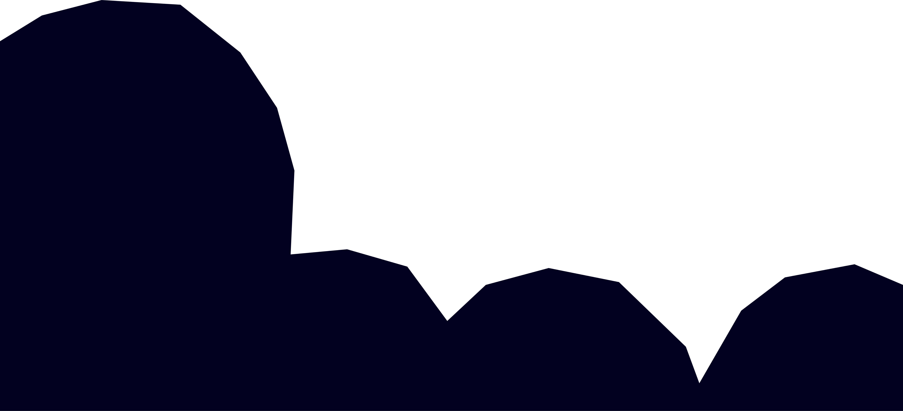

Colui che sussurrava
nelle tenebre


Colui che sussurrava
nelle tenebre
Il Pianeta Yuggoth
HP Lovecraft, 1930
Mi aspetto di visitare altri pianeti, addirittura altre stelle e altre galassie.
Il mio primo viaggio sarà a Yuggoth.


È uno strano globo scuro, proprio al limite del nostro sistema solare,
ancora sconosciuto dagli astronomi terrestri.
Ci sono grandissime città, su Yuggoth, immense torri a
gradoni costruite in una varietà di pietra nera.
La luce del sole vi arriva appena.
Ma quelli-di-fuori non hanno bisogno di luce. La luce li infastidisce: perché nel
nero cosmo
al di là dello spazio e del tempo da cui in origine sono arrivati,
essa non esiste.
Quel mondo tenebroso di giardini fungosi e città prive di
finestre
non è un posto orribile. Soltanto a noi sembra tale.
Forse parve tale anche agli esseri che per primi esplorarono il
pianeta, in età arcaica.
Il viaggio a Yuggoth farebbe
impazzire
un uomo debole…
... Eppure io ci andrò.
A volte pavento dove ci porteranno gli anni futuri... Soprattutto da quando è stato scoperto il nuovo pianeta: Plutone.